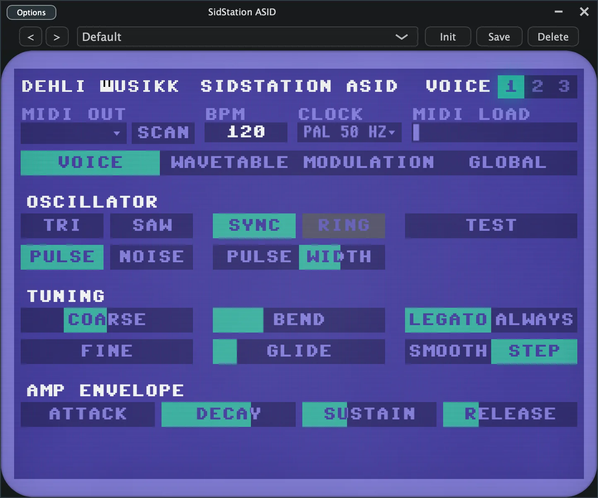
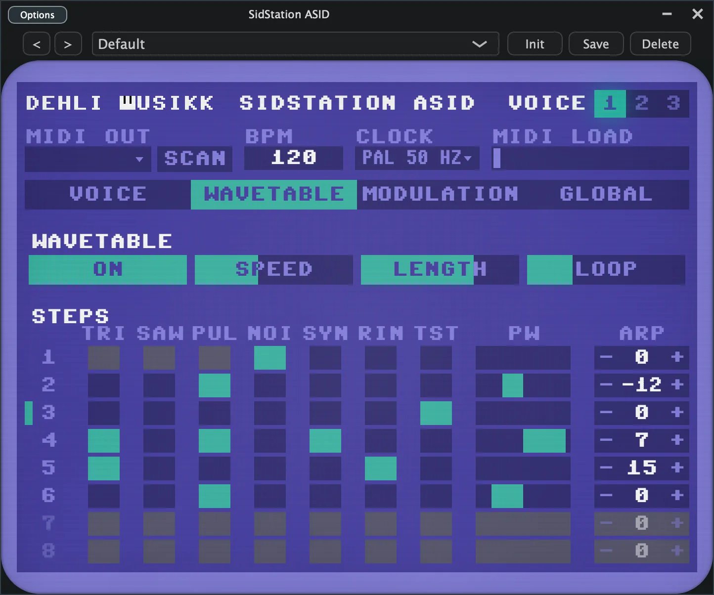
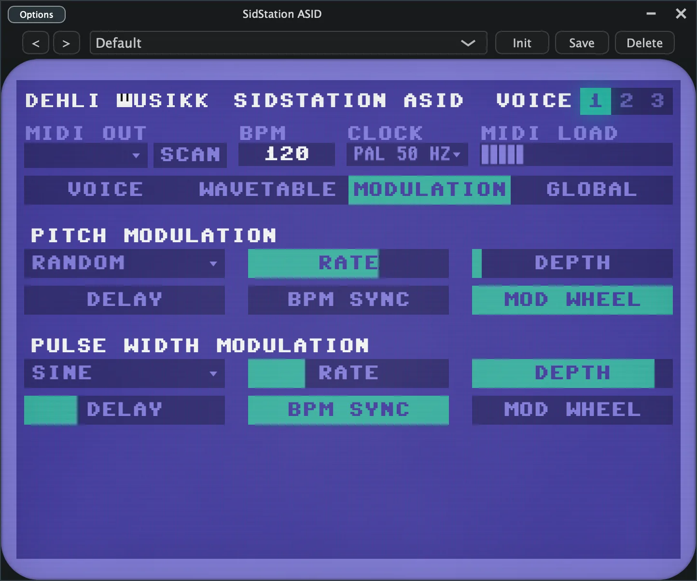
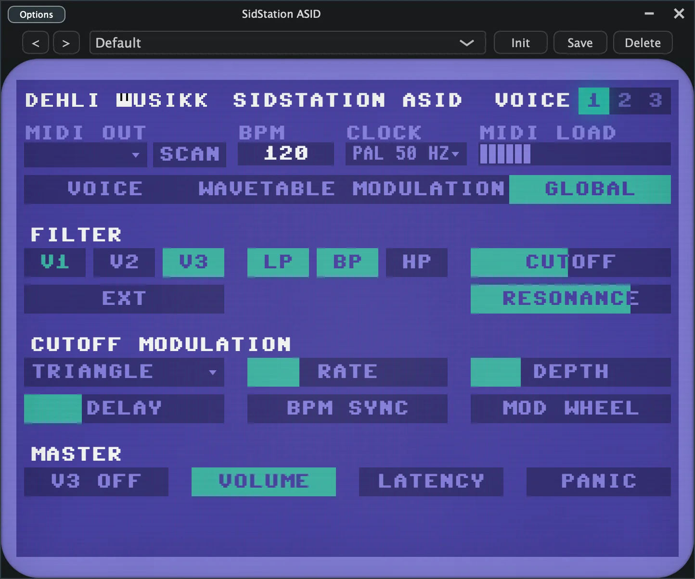

Play the three SID voices of the Elektron SidStation directly, one voice per instance.
macOS 10.15 or later. Apple Silicon and Intel. Signed and notarized. Install steps.
SidStation ASID streams raw SID registers over the ASID protocol instead of sending MIDI CC, so every register is reachable and each voice gets its own pitch and gate. One instance drives one voice. Put an instance on each of three DAW tracks, pick a voice per track, and the three voices become three monosynths you can sequence apart. Getting that out of the SidStation on its own is awkward.
The dark strip along the top is the same on every tab. It carries the MIDI output picker with a Scan button, the tempo and the clock rate, a MIDI load meter, the voice selector, and the preset bar.
Everything that shapes a single voice. Oscillator has the four combinable waveforms with Sync, Ring, Test and Pulse Width. Tuning has coarse and fine pitch, the bend range, the glide time, and the glide trigger and type switches. Amp Envelope is the ADSR.

An eight step table that drives the waveform and more, one step per tick. The top row sets whether it runs, plus speed, length and the loop point. Each step row carries its waveform, Sync, Ring and Test, a pulse width fader, and an arpeggio offset. The loop point and the playing step are marked on the left.

Two LFOs for this voice, one on pitch and one on pulse width. Each has a shape, a rate that is either free in Hz or locked to the host tempo as a note division, a depth, a Mod Wheel switch so the wheel scales the depth, and a fade in Delay.

The settings the SID shares across all three voices. Filter has per voice routing, the external input, the combinable low, band and high pass modes, and Cutoff and Resonance. Cutoff Modulation is a third LFO on the filter cutoff. Master has the Voice 3 Off switch, Volume, Latency and Panic.

macOS 10.15 or later, Apple Silicon or Intel. The package is signed and notarized, so it opens without a Gatekeeper warning.
| What | Goes to |
|---|---|
| AU | /Library/Audio/Plug-Ins/Components |
| VST3 | /Library/Audio/Plug-Ins/VST3 |
| Standalone | /Applications |
One instance drives one voice, so load three instances on three tracks and set each to a different voice.
The project builds via CMake, and JUCE is fetched automatically by the root CMakeLists. With copy after build on, the AU and VST3 land in your user plugin folders, and the Standalone app is the quickest way to test.
git clone https://github.com/benjamindehli/sidstation-asid.git cd sidstation-asid cmake -B build -DCMAKE_BUILD_TYPE=Release cmake --build build
Developed and tested against OS 1.11 R34 hardware on macOS. Windows and Linux are untested.